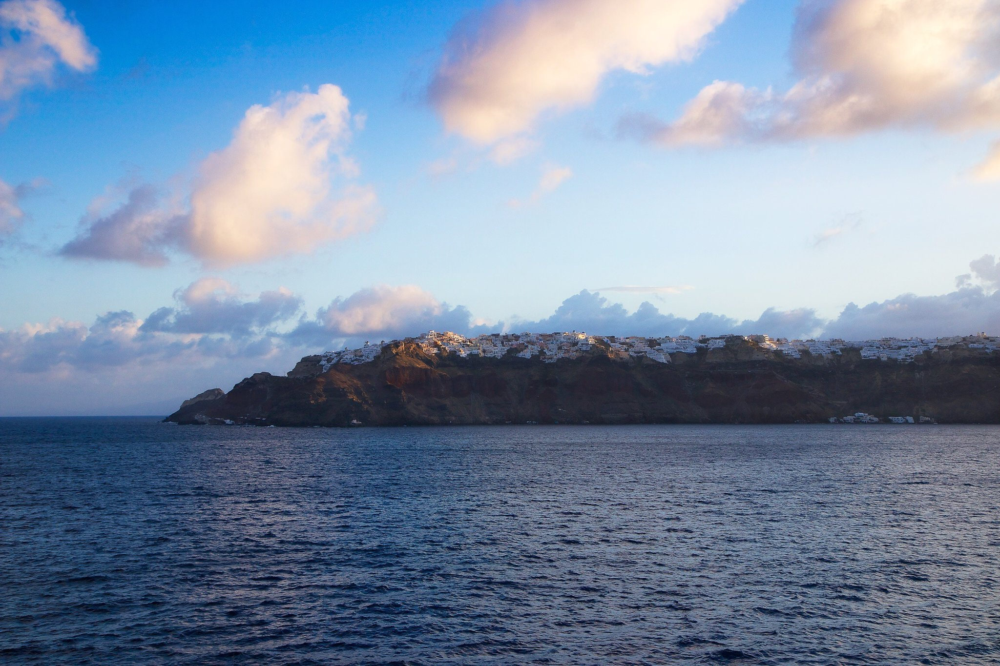

Mark Elster
Historic Reflections 10
The itinerary, day 10
Our last night aboard, we packed our belongings, and then spent a fabulous evening at dinner in the swanky Polo Lounge. NancyEllen was impressed that the waiter asked her and mom whether they preferred a white or black napkin to compliment their outfits. The food was superlative once again. Bobbie and Fred came by our table to chat and to say goodbye to all of us.
The next morning we docked in Piraeus near Athens. Our parents and sons prepared to leave for Seattle unaware of the misadventures that awaited them (an unplanned stay in Chicago, thanks to Italian bureaucratic inefficiency* that we would only narrowly dodge a few days later). It was difficult to separate at the gangplank as we decamped to our hotel in Athens, wishing they could all join us.
*Not to pick on the Italians—they seemed no more inefficient and gruff than the generalized bureaucratic breed always and everywhere…
The next morning we docked in Piraeus near Athens. Our parents and sons prepared to leave for Seattle unaware of the misadventures that awaited them (an unplanned stay in Chicago, thanks to Italian bureaucratic inefficiency* that we would only narrowly dodge a few days later). It was difficult to separate at the gangplank as we decamped to our hotel in Athens, wishing they could all join us.
*Not to pick on the Italians—they seemed no more inefficient and gruff than the generalized bureaucratic breed always and everywhere…
Santorini

Although the museum lacked much compelling interpretive information the displayed Minoan artifacts were beautiful and iconic for anyone with a passing interest in art history. The very crucible of Western civilization lay here!
After a decent lunch with a window table overlooking the caldera and Fira we ventured back through town and stumbled upon a wedding party coming out of a church, the bells still ringing. I managed to capture the moment and NancyEllen's delightful reaction.
As the afternoon waned, we faced a choice, leave early on foot or donkey down the precipitous cliff trail (NancyEllen's shoe choice foreclosed this option) or linger 30–minutes longer and depart via the tram. While we didn't get much exploring done in that time we're glad we stayed and saw a bit more, but as the winds grew fierce, we were ready to leave.
The steep tram ride down the cliff was spectacular. The departure quay was scenically stunning and offered a new perspective on Fira.
Once again we met up with the consistently rude tourists from the Turkish behemoth anchored beside our Riviera—so glad we didn't travel with them! While in a long cue for our ride, we were happy to have a group of them gruffly shove in front of us so they would end up on a separate tender.
As the afternoon waned, we faced a choice, leave early on foot or donkey down the precipitous cliff trail (NancyEllen's shoe choice foreclosed this option) or linger 30–minutes longer and depart via the tram. While we didn't get much exploring done in that time we're glad we stayed and saw a bit more, but as the winds grew fierce, we were ready to leave.
The steep tram ride down the cliff was spectacular. The departure quay was scenically stunning and offered a new perspective on Fira.
Once again we met up with the consistently rude tourists from the Turkish behemoth anchored beside our Riviera—so glad we didn't travel with them! While in a long cue for our ride, we were happy to have a group of them gruffly shove in front of us so they would end up on a separate tender.
The crossing is cold and choppy on Santorinian tenders dedicated to transporting cruise-ship passengers to Athinios (we are told that our ship's tenders are too underpowered for navigating these treacherous waters). As we approach the so–called harbor we see that it is little more than a concrete bulkhead and a parking lot anchoring a switchback road that improbably snakes up the cliff face. As the tender ahead of us docks we see that merely stepping ashore is going to be an adventure—the waves heave the craft up and down seven feet at times! The older folks around us exchange nervous glances as the crew explains how they're going to safely get us off the now wildly tossing tender. Our hats are off to the crew that deftly moored our boat, even as it bucked up and down like a rodeo bull, without crashing into the quay.

After joining our guide Arina, we quickly ascended the cliff face—the immensity of the caldera unfolding before us. Looking back, we see now just how small our Riviera is compared to an enormous cruiser out of Turkey (carrying a rude and comically obnoxious group of Eastern Europeans and Asians—ugly Americans indeed).
After a brief discourse on the natural history of the island, Arina tells us of the peculiarities and hardships of life on the rim of a giant volcano. An earthquake in 1956 destroyed 80 percent of the buildings on the island, and now, with the Greek economy in shambles since joining the EU we see buildings all over standing unfinished and abandoned, skeletal hulks slowly eroding in the relentless wind. Arina notes that, "The only hospital is little more than a glorified first aid station—women must go to Athens to deliver their babies after enduring an eight hour ferry ride!"
Comprising thirty–four square miles of land area, most of it under cultivation along the broad slopes banking to the east, with a few small towns and a total population of 15,500, Santorini remarkably has 33 churches. This doesn't include the ubiquitous private chapels that dot the passing landscape practically as numerous as houses.
The flora (including cactus) show this to be more or less a desert island. Consequently the grapevines we see are all grown low to the ground to protect them from the wind, with little bowl shaped depressions around their trunks that gather moisture from the passing moist sea air at night. Arina tells us, "on our little island, there is more wine than water, more churches than houses, and more donkeys than people!"
Our tour didn't permit time for visiting the archeological site at Acrotiri, the town near the ruins of a Bronze Age Minoan settlement destroyed 3,600 years ago when Thera exploded in what may have been one of the largest eruptions in recorded history. Our guide explained that much like Pompeii, the eruption buried the settlement in a pyroclastic flow that preserved many buildings and artifacts. The event is sometimes called the Minoan eruption because it may have ended the whole civilization when the ensuing tsunami wiped out most of the cities of distant Crete where the empire was centered. We're told it may also have spawned the myth of Atlantis, and the story of Exodus in the Bible (specifically the parting of the seas).
After a brief discourse on the natural history of the island, Arina tells us of the peculiarities and hardships of life on the rim of a giant volcano. An earthquake in 1956 destroyed 80 percent of the buildings on the island, and now, with the Greek economy in shambles since joining the EU we see buildings all over standing unfinished and abandoned, skeletal hulks slowly eroding in the relentless wind. Arina notes that, "The only hospital is little more than a glorified first aid station—women must go to Athens to deliver their babies after enduring an eight hour ferry ride!"
Comprising thirty–four square miles of land area, most of it under cultivation along the broad slopes banking to the east, with a few small towns and a total population of 15,500, Santorini remarkably has 33 churches. This doesn't include the ubiquitous private chapels that dot the passing landscape practically as numerous as houses.
The flora (including cactus) show this to be more or less a desert island. Consequently the grapevines we see are all grown low to the ground to protect them from the wind, with little bowl shaped depressions around their trunks that gather moisture from the passing moist sea air at night. Arina tells us, "on our little island, there is more wine than water, more churches than houses, and more donkeys than people!"
Our tour didn't permit time for visiting the archeological site at Acrotiri, the town near the ruins of a Bronze Age Minoan settlement destroyed 3,600 years ago when Thera exploded in what may have been one of the largest eruptions in recorded history. Our guide explained that much like Pompeii, the eruption buried the settlement in a pyroclastic flow that preserved many buildings and artifacts. The event is sometimes called the Minoan eruption because it may have ended the whole civilization when the ensuing tsunami wiped out most of the cities of distant Crete where the empire was centered. We're told it may also have spawned the myth of Atlantis, and the story of Exodus in the Bible (specifically the parting of the seas).


Rising to the a treeless windblown summit—a lonely outpost of antennae the only inhabitants— we get a grand overview of the whole island and caldera. And then we're off to lovely Oia at the northern tip that we passed below on the way into the caldera that morning. As we make our way along the broad slope of the old volcano, threatening clouds begin to mount and the temperature drops—unleashing a torrent of rain and a flash flood almost the moment we step off the coach. Fortunately our astute crew prepared us with large umbrellas or we'd have been like drowned rats!
After transiting midway across the Aegean, we awake to a landform on the horizon. Edging closer, still about 120 miles from mainland Greece, the landmass suddenly resolves into a circular archipelago of spiny islands, collectively known as Santorini, that are actually remnants of a collapsed shield volcano that was at least the size of Mt. Etna before it blew up. A stiff and unseasonably chilly breeze greets us as we sail into the central lagoon that fills the caldera, skirting below the 1000–foot cliffs of the main island, also called Santorini, or Thera, from ancient times.
Passing beneath Oia, encrusted like barnacles clinging to the cliffs above, we marveled at the beauty of this place, sparkling white in the low morning sun now peaking through the scudding clouds and look forward to it as our first destination of the morning. As we sail past to anchor mid–bay, we can see the capital city, Fira (or Thira depending on who you ask, which is also the name of the principality). At first there appears to be no access from the bay—the quay and tram at Skalos a thousand feet below are too small to discern at a distance. We're informed our tenders will cross the bay to Athinios, the principal 'harbor' on the caldera side of the island, where we will catch our tour bus and guide.
Passing beneath Oia, encrusted like barnacles clinging to the cliffs above, we marveled at the beauty of this place, sparkling white in the low morning sun now peaking through the scudding clouds and look forward to it as our first destination of the morning. As we sail past to anchor mid–bay, we can see the capital city, Fira (or Thira depending on who you ask, which is also the name of the principality). At first there appears to be no access from the bay—the quay and tram at Skalos a thousand feet below are too small to discern at a distance. We're informed our tenders will cross the bay to Athinios, the principal 'harbor' on the caldera side of the island, where we will catch our tour bus and guide.
As quick as it came, the rain let up just as we reboarded our coach bound for Fira. Both these towns make it clear why Santorini is such a popular destination, their beauty is hard to take in, almost surreal to us.
After a quick walking tour our guide leaves us to ourselves for a sometimes chilly and always windy afternoon of exploring what this town has to offer along winding steep streets and stairs overflowing with people. It is clear that tourism is the dominant industry, each cruise ship creating a tidal wave of people. Still we managed to find a restaurant with a view, and only a 20–minute wait. But first we trekked the length of town, visited the Acrotiri museum (interesting but disappointing, the dig site is no doubt a much better alternative) and experienced the gale–force winds in our summer clothes (the natives swore that this sort of weather 'never' happens this time of year).
After a quick walking tour our guide leaves us to ourselves for a sometimes chilly and always windy afternoon of exploring what this town has to offer along winding steep streets and stairs overflowing with people. It is clear that tourism is the dominant industry, each cruise ship creating a tidal wave of people. Still we managed to find a restaurant with a view, and only a 20–minute wait. But first we trekked the length of town, visited the Acrotiri museum (interesting but disappointing, the dig site is no doubt a much better alternative) and experienced the gale–force winds in our summer clothes (the natives swore that this sort of weather 'never' happens this time of year).
Intrepid Seattleites as we are, we don't let the rain phase us at first, but as the unrelenting deluge makes a treacherous river of the polished marble street, we seek refuge in a colorful shop or two, finally alighting in the Happy Fish Spa. Inside are rows of tanks filled with salt water and teaming with little fish waiting to nibble on your feet! The guys and I immediately decide to go for it while NancyEllen squeamishly cringes at the mere thought (not knowing that I had already paid for her too). After some hemming and hawing she finally agreed to partake and put on a delightful show of alternating fear and bravery. Finally, thoroughly enjoying an experience we never would have had if not for the rain.